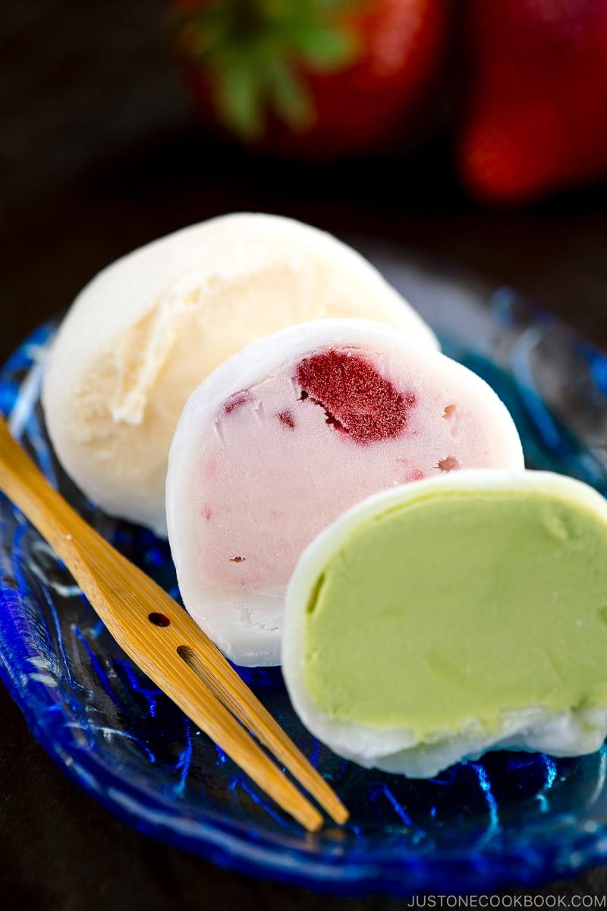
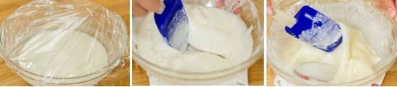
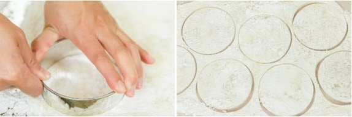

Mochi Ice Cream

Description
Mochi ice cream is a Japanese dessert that combines two distinct textures: soft, chewy mochi (a sweet glutinous rice dough) and creamy ice cream. The mochi dough is made by pounding glutinous rice into a smooth, elastic paste, which is then shaped into small, round pieces. Each piece of mochi is filled with a scoop of ice cream, typically in flavors like matcha (green tea), vanilla, red bean, or mango.
The contrast between the cold, creamy ice cream and the chewy, slightly sweet mochi makes for a unique and enjoyable treat. Mochi ice cream is often enjoyed as a refreshing dessert, especially during warmer months, and has become popular worldwide for its fun texture and delicious flavor combinations.
Ingredients
- ¾ cup shiratamako (glutinous rice flour/sweet rice flour) (or use mochiko; see the measurement below; you can buy shiratamako on Amazon)
- ¾ cup water
- ¼ cup sugar (do not omit sugar as the moisture in the sugar helps mochi stay softer)
- ½ cup potato starch or cornstarch
- ice cream of your choice
If you substitute shiratamako with mochiko…
- ¾ cup mochiko (glutinous rice flour/sweet rice flour)
Steps
- Gather all the ingredients. Equipment you will need: 12 aluminum/silicone cupcake liners, a medium cookie scoop (smaller than an ice cream scooper), a rolling pin, and a 3.5 inch (9 cm) cookie cutter or a round bowl/glass cup.
- Using the cookie scoop, scoop out ice cream of your choice into aluminum/silicone cupcake liners. The ice cream will melt quickly so I recommend freezing them immediately for a few hours or until ice cream balls are completely frozen solid.
- Once the ice cream balls are frozen solid and ready, you can start making mochi. Combine ¾ cup shiratamako (glutinous rice flour/sweet rice flour) and ¾ cup water in a medium bowl and whisk all together. Tip: To use mochiko instead of shiratamako, substitute ¾ cup mochiko (glutinous rice flour/sweet rice flour) in the above step.
- Add ¼ cup sugar and mix well until combined.
- Microwave Method: If you’re using a microwave to cook mochi, cover the bowl with some plastic wrap (do not cover too tight). Put the bowl in the microwave and heat it on high heat (1000w) for 1 minute. Take it out and stir with a wet rubber spatula. Cover again and cook for 1 minute. Stir again, cover, and cook for 30 seconds to finish cooking. The color of mochi should change from white to almost translucent.

- Steaming Method: If you’re using a steamer, cover the steamer lid with a towel so the condensation won’t drop into the mochi mixture. Put the bowl into a steamer basket and cover to cook for 15 minutes. Halfway cooking, stir with a wet rubber spatula and cover to finish cooking. The color of mochi should change from white to almost translucent.
- Cover the work surface with parchment paper and dust it generously with some of the ½ cup potato starch or cornstarch. Then transfer the cooked mochi on top.
- To prevent from sticking, sprinkle more potato starch on top of the mochi. Once it’s cool down a bit, you can spread the mochi into a thin layer, about ⅛ inch (3 mm), with your hands or with a rolling pin. Make sure to apply potato starch on your hands and the rolling pin. I recommend using a rolling pin because it’s easier to evenly spread out.
- Transfer the mochi with parchment paper onto a large baking sheet. Refrigerate for 15 minutes until the mochi is set.
- Take out the mochi from the refrigerator and cut out 7–8 circles with the cookie cutter.

- Dust off the excess potato starch with a pastry brush. If you find some sticky part, cover the area with potato starch first then dust off. Place a plastic wrap on a plate and then mochi wrapper on top, then lay another layer of plastic wrapper down. Repeat for all wrappers. With leftover mochi dough, roll into a ball and then flatten into a thin layer again and cut out into more circle wrappers (I could make about 12 mochi wrappers).
- Now we’re ready to form mochi ice cream balls. On the work surface, place one sheet of plastic wrap with a mochi layer on top. Working quickly, place a scoop of ice cream into the center of the mochi wrapper. Pinch the four corners of the mochi layer together to wrap the ice cream ball. Repeat with the remaining mochi wrappers and ice cream balls.
- When mochi gets sticky, put some potato starch on the sticky area and seal the opening. Quickly cover with the plastic wrap and twist to close. Place each mochi ice cream into a cupcake pan to keep the shape. You will need to work on one mochi ice cream at a time in order to keep the ice cream frozen at all times. Put mochi ice cream back into the freezer for at least 2–3 hours. When you’re ready to serve, keep them outside for a few minutes until outer mochi gets soften a little bit.
To Store
- You can keep the mochi ice cream in the freezer for 2–3 weeks. Be careful with freezer burn and make sure to store without air.
Back to the list of recipes!